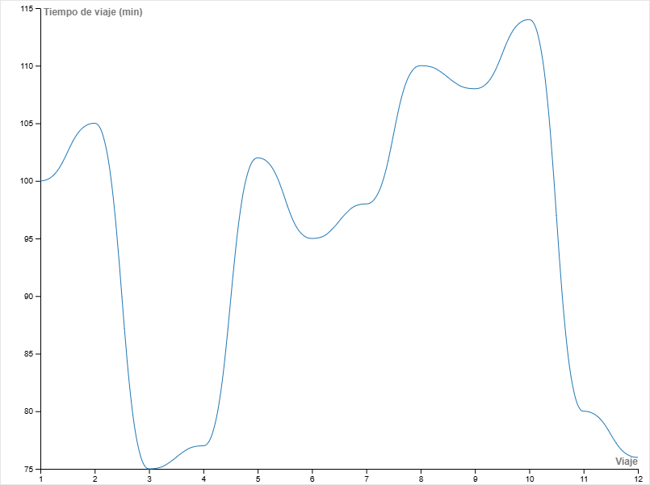
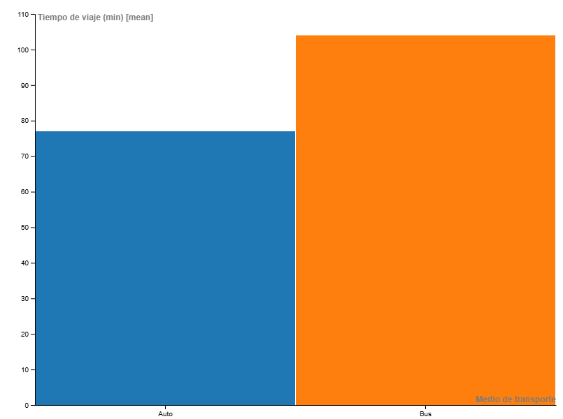

Registro personal de mis viajes en agosto 2025.
Dataset: descargar CSV

La duración de los viajes varió entre ~88 y 110 minutos. Los viajes en Auto tienden a durar más.

Comparando promedios, la Combi resultó más rápida que el Auto en este periodo.
Datos personales recolectados por el autor. Prototipo – TP1 (ITBA, Visualización de la Información).